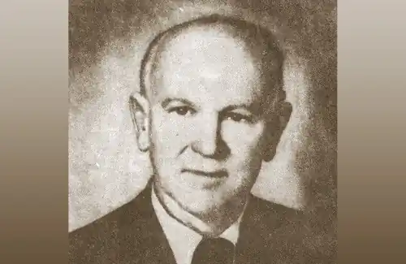
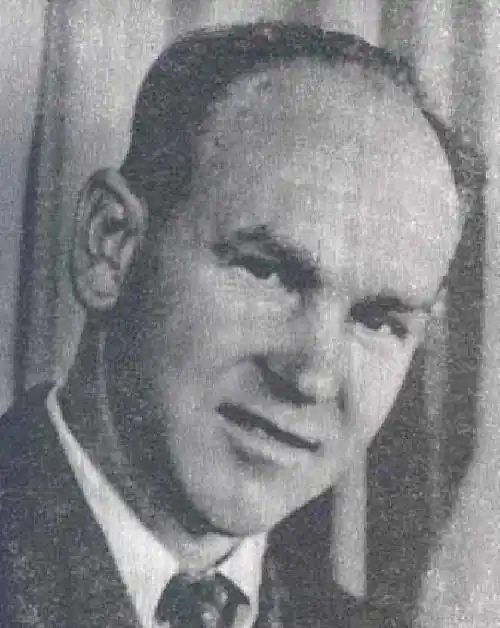
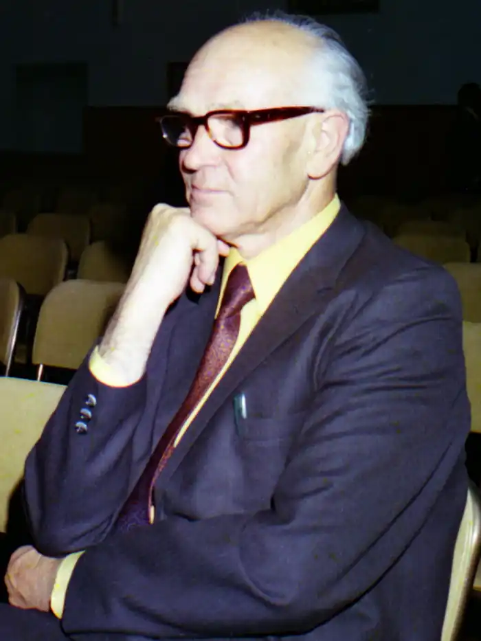

Дмитро Чуб
Наша людина в Австралії
Від цього вже немолодого чоловіка йде якась добра і світла сила. Вона до фізичного відчутна, коли слухаєш його спокійні й тихі слова, бачиш ощадливі жести. А ще за всім тим вчуваєш: минуле чоловіка не було аж надто ласкавим до нього — там його підстерігало немало складних випробувань, там переплелися справді нелегкі дороги, що часто випадають на долю тих людей, які не хотіли змиритися з обставинами й не капітулювали перед ними. Це справді рідкісний людський тип, оскільки переважна більшість із нас покірно сприймає все те, що поза нашою волею відбувається з нами. Живе він у тих краях, які уявляються нам доволі екзотично: пальми, евкаліпти, кенгуру. Але не тільки цими прикметами характерне його життя в далекій Австралії. Є на тому континенті маленький український острів, без перебільшення можна сказати — створений наполегливими зусиллями таких людей, як цей чоловік. Маю на увазі громаду (а вона — чималенька!) наших земляків, які не тільки не забули рідну мову та культуру, а й з усіх сил плекають їх. Вони організували українські школи, видають українські газети й журнали, проводять літературні свята й вечори. І душею всіх таких справ є він, Дмитро Нитченко, знаний ще в літературі і як Дмитро Чуб (майже п'ять десятиліть тому прибрав собі цей псевдонім). А народився Дмитро Чуб у заможній селянській родині на Полтавщині далекого 1905 року. Про своє дитинство, як, зрештою, і про все подальше — доавстралійське — життя, він докладно розповів у дуже цікавій книжці спогадів "Від Зінькова до Мельбурна", що побачила світ в австралійському українському видавництві "Байда". Там же, до речі, опубліковано більшість його книжок. Навчався майбутній письменник в індустріально-технічній школі в Зінькові, потім був Краснодарський робітфак, де його оголосили класовим ворогом, і з цим тавром його було виключено (така доля в ті часи характерна для десятків тисяч людей). Він переїхав до Харкова, вступив на мовно-літературний факультет місцевого педінституту. Там прилучився до літературного життя столиці України, знайомиться з відомими письменниками, починає працювати в Державному видавництві. Сторінки спогадів про той період життя рясніють іменами Івана Багряного, Миколи Хвильового, Бориса Антоненка-Давидовича, Остапа Вишні, Майка Йогансена, Григорія Епіка, Олекси Слісаренка, Володимира Сосюри, Юрія Яновського — всіх їх Дмитро Нитченко бачив зблизька й запам'ятав характерні деталі, які допомагають читачеві побачити цих людей справді живими. З початком другої світової війни Дмитра Нитченка мобілізують в армію, він потрапляє в полон. Війна закінчується. Письменник разом із сім'єю живе в таборі переселенців у Німеччині, де зібралося чимало українських інтелігентів, які не мають жодного наміру повертатися додому, де лютують репресії. Тут навіть налагоджується культурно-літературне життя. В місті Ульмі діє українська гімназія, в якій викладає і Дмитро Нитченко, відбуваються літературно-мистецькі вечори. 1949 року письменник разом із сім'єю від'їздить до Австралії. В одному із своїх віршів він так передав тодішній стан душі: Незнаний світ за обрієм клекоче, Хлюпоче день об кораблів борти, А серце б'ється птахом серед ночі: У край який життя своє нести? І от у світ біжать в'юнкі дороги, Геть перетнувши прірви і поля, Та ще не раз нас дожене тривога: Чи вернемо додому звідтіля? Чи рідний сад почує моє слово (Там не одна пролинула весна), Чи яблуко зірву я з яблунь знову, Що вітами схилились до вікна? Чи вийду ще з косою я на луки, Чи рідне сонце в щоку припече? І серце стогне, плаче від розпуки, Хоч по виду сльоза й не потече. Нелегко було на перших порах на п'ятому континенті. Треба було щодня думати про хліб насущний, оскільки сім'я, ясна річ, не мала ніяких заощаджень, — Дмитро Нитченко працював тоді у каменоломнях. А у вільний час вивчав англійську мову. І, звичайно ж, не переставав писати. Успадкована ще від діда-прадіда селянська наполегливість та працелюбність допомогли йому вижити в тому світі, вигодувати й вивчити дітей. Незабаром Кенгуралія (так жартома називають тамтешні українці Австралію) стала йому вже не чужиною, а майже рідним краєм. Він тривалий час учителював в українських школах, очолював Українську центральну шкільну раду в Австралії, організував літературно-мистецький клуб імені Василя Симоненка й керував його діяльністю. Нитченко — також член об'єднання українських письменників "Слово" (очолює його австралійську філію), дійсний член Наукового товариства імені Шевченка. Одне слово, громадських обов'язків у нього вистачило б на десятьох. Але така він людина, що просто не може без цього обходитися. Та й у свої, скажемо прямо, вже далеко не молоді літа почувається людиною при здоров'ї і по-молодечи гострому розумі. Про це чи не найкраще свідчить така деталь. Я зустрівся з ним у київському готелі "Дніпро" під час його приїзду до столиці України. Після кількагодинної розповіді про свою життєву одіссею й українську літературу Австралії він почав демонструвати мені комплекс складних фізичних вправ, які він виконує щоденно, підтримуючи "форму". Такі навантаження посильні не кожному з молодиків. З-під його невтомного пера вийшло чимало книг. А пише він і вірші, й оповідання для дітей, і мемуари, і літературознавчі праці, і підручники, і статті та рецензії — здається, просто немає тих жанрів, у яких би він не працював. З-поміж найпомітніших його книжок треба назвати "Це трапилось в Австралії", "На гадючому острові", "Вовченя", "Стежками пригод", "З новогвінейських вражень", кілька підручників і збірок статей. Є серед них особливо популярна серед юних українських читачів Австралії, Канади, Німеччини й США (вона витримала вже кілька видань). Це — "Живий Шевченко". Вперше свою біографію поета Дмитро Чуб опублікував ще 1947 року. Вона була прихильно прийнята українською емігрантською пресою. Потім з'явилася в англійському перекладі Юрія Ткача (до речі, внука письменника), а також в оригіналі, збагачена новими розділами й матеріалами. Він добре знає праці вітчизняних і зарубіжних шевченкознавців, спогади сучасників Кобзаря і пов'язані з його особою документи. Чи ж треба казати про те, що за цим стоїть багатолітня напружена робота над темою. Книжку Дмитра Чуба складає мозаїка епізодів із біографії Тараса Шевченка від днів дитинства й до смерті поета. Кожен із них подано як самостійну документальну новелу. Характерно, що автор ніде не намагається особливо белетризувати події, а викладає їх стисло, постійно підкреслюючи достовірність посилання на джерела. Звичайно ж, тут зібрано не тільки епізоди з побуту. Широко йдеться й про оточення поета, близьких і дорогих йому людей, про радісні й сумні дні Кобзаря. Обрана форма подачі матеріалу дає змогу авторові вільно переходити від побутової подробиці до узагальнення чи навіть гіпотези. Все це робить книгу справді цікавою для читання. Отже, праця Дмитра Чуба йде на велику Україну. Письменник мріяв про такий час, вірив у те, що він настане. Привітаймо ж і його, і себе з цією подією. Михайло Слабошпицький З книги: Дмитро Чуб. Живий Шевченко. — К.: "Веселка". — 1994р.